Decision actuelle
ACCEPTED - ENGINEERING INTERNE
Validation du TET4 lineaire isotrope par Quentin Farinazzo le 14 juillet 2026. La revue est une auto-revue non independante et le projet est prive a cette date.
Les contraintes locales de torsion ne font pas partie du domaine accepte: leur erreur L2 vaut encore 29,06 % au maillage le plus fin.
Panneau mince 3D TET4 en traction et compression
| Grandeur | Valeur | Critere |
|---|---|---|
| Erreur relative deplacement maximale | 4,94e-15 | <= 1e-9 |
| Erreur relative contrainte maximale | 3,64e-14 | <= 1e-9 |
| Residu libre maximal | 7,61e-14 | <= 1e-8 |
| Maillages | 5 en traction + 5 en compression | memes geometries |
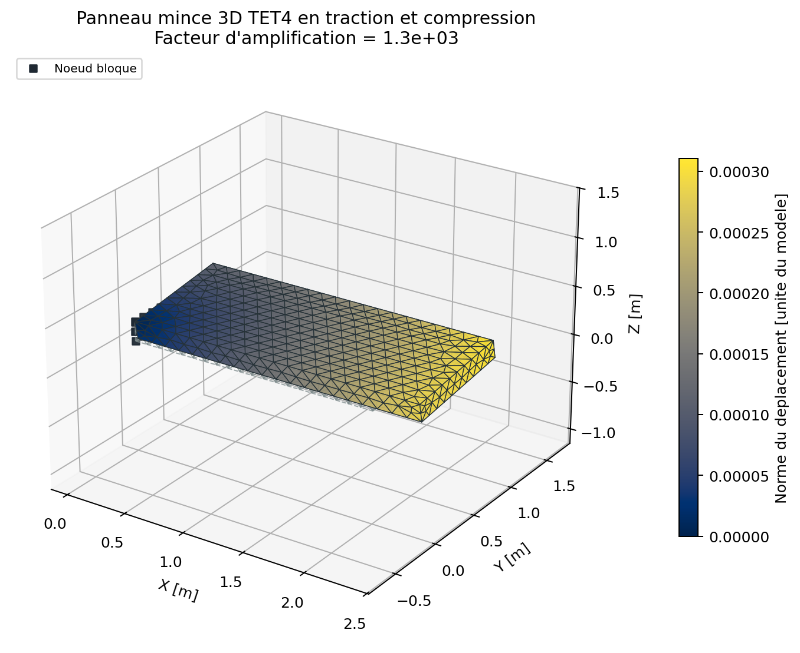
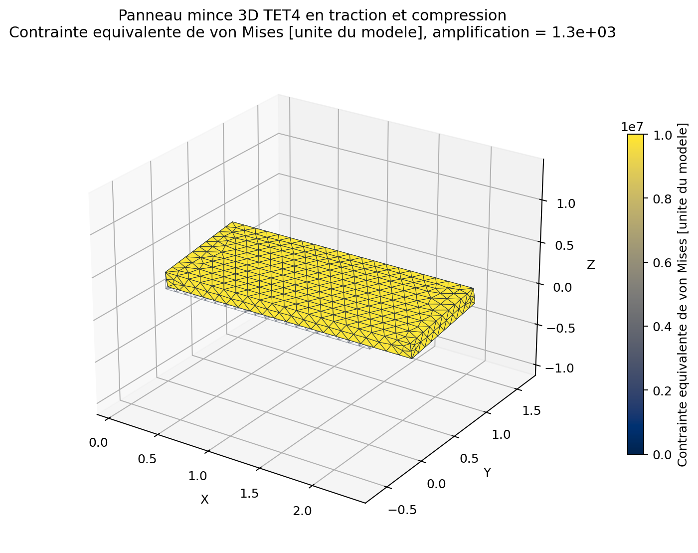
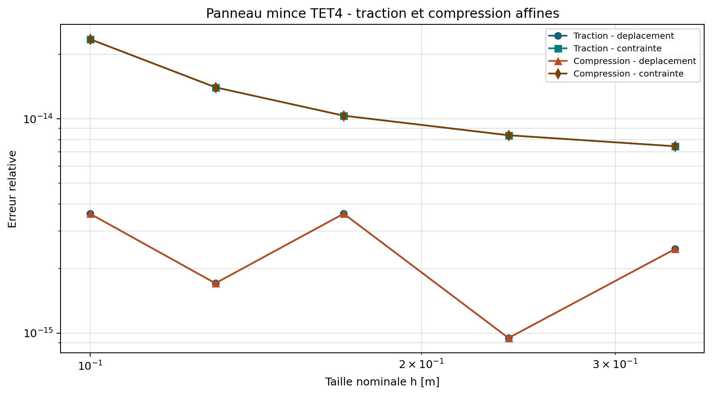
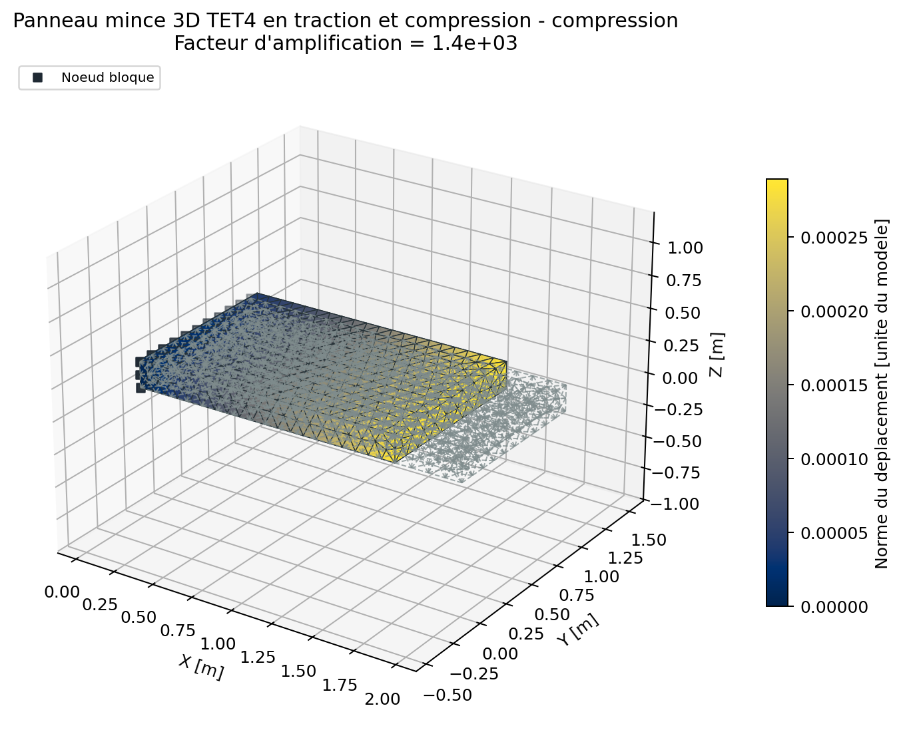
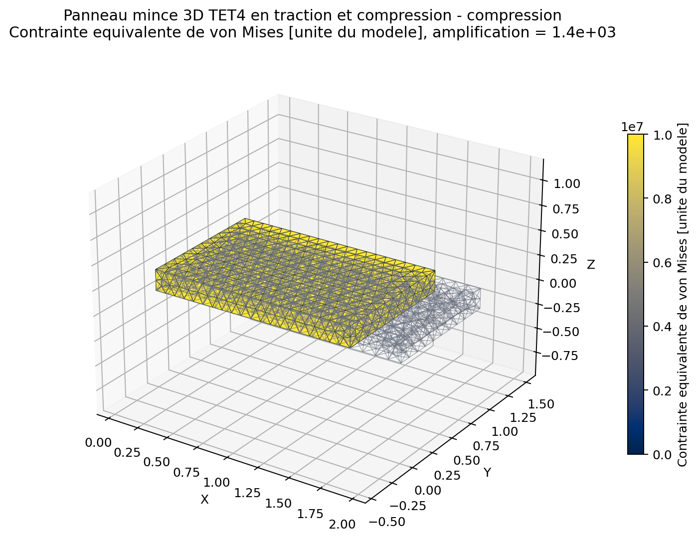
Poutre 3D TET4 en flexion
| Grandeur | Valeur | Critere |
|---|---|---|
| Nombre de maillages TET4 | 6 | raffinement monotone |
| Erreur initiale sur la fleche | 44,89 % | information |
| Erreur finale sur la fleche | 7,71 % | <= 20 % |
| Ordre observe | 1,377 | >= 1,0 |
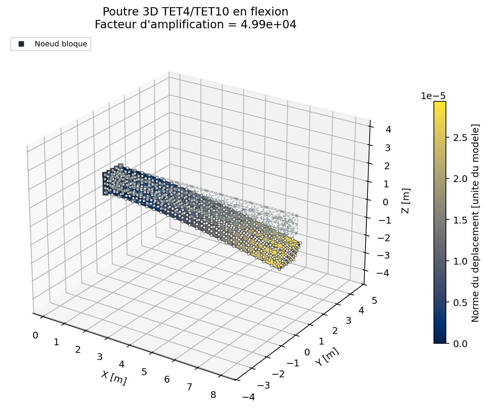
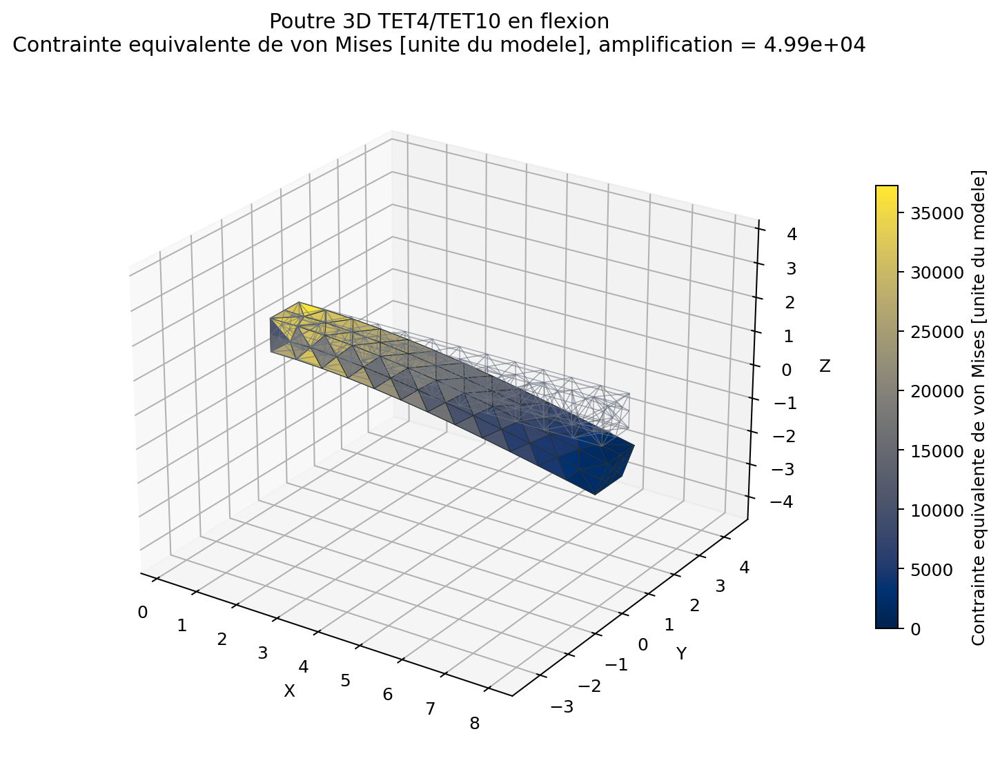
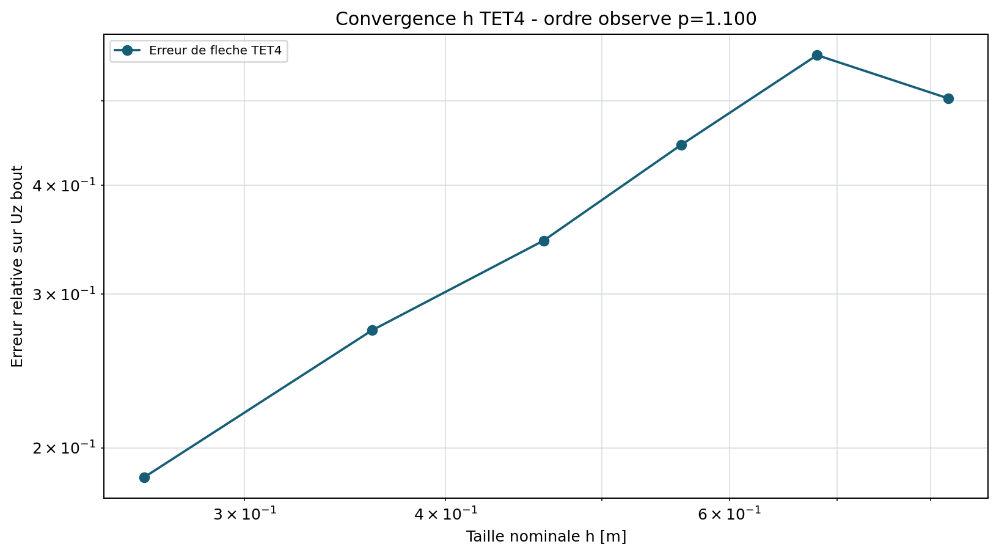
Arbre circulaire TET4 en torsion de Saint-Venant
Lecture du champ de deplacement
phi(x) = T * x / (G * J) u_x = 0 u_y = -phi(x) * z u_z = phi(x) * y
Traction terminale
t_x = 0 t_y = -T * z / J t_z = T * y / J
| Grandeur | Valeur | Critere |
|---|---|---|
| Nombre de maillages | 8 | raffinement monotone |
| Erreur de rotation, maillage fin | 3,07 % | <= 15 % |
| Ordre de convergence observe | 1,499 | >= 0,5 |
| Erreur relative sur le couple | 2,27e-16 | <= 1e-12 |
| Erreur L2 des contraintes, maillage fin | 29,06 % | hors domaine accepte |
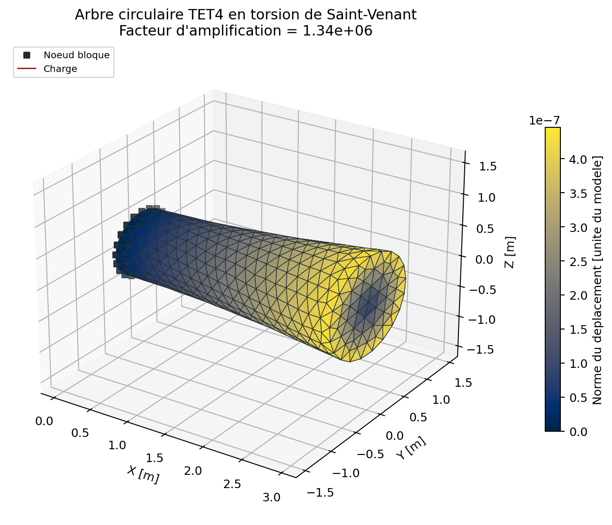
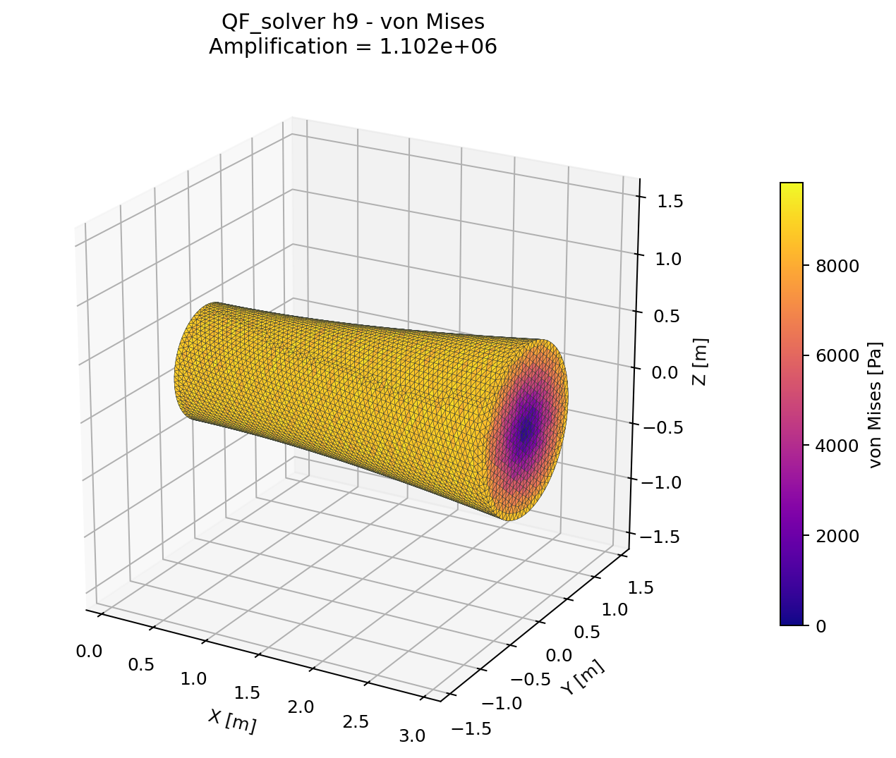
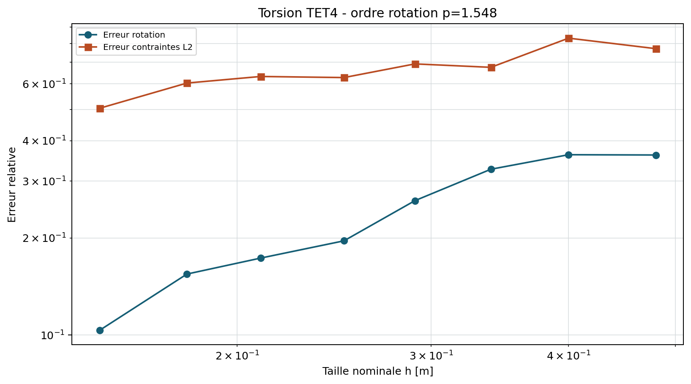